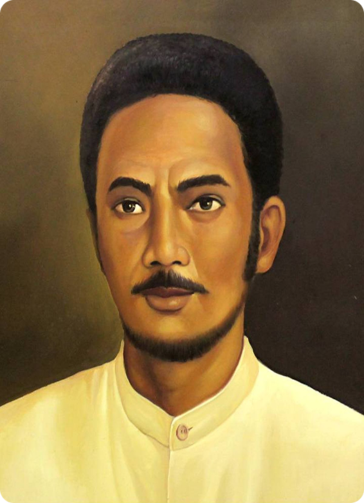

Kapitan Pattimura
Kapitan Pattimura, atau nama aslinya Thomas Matulessy, berasal dari Maluku. Latar belakang perlawanannya adalah kembalinya Belanda ke Maluku setelah sempat dikuasai Inggris. Belanda kembali menerapkan kebijakan yang sangat menindas rakyat, seperti monopoli perdagangan rempah, kerja rodi (kerja paksa), dan pajak yang tinggi. Kebijakan-kebijakan ini membuat rakyat Maluku menderita dan memicu kemarahan. Perjuangan dan Pengepungan Benteng Duurstede Pada 16 Mei 1817, Pattimura memimpin perlawanan bersenjata. Puncak dari perlawanan ini adalah serangan dan perebutan Benteng Duurstede di Pulau Saparua. Dalam serangan itu, seluruh penghuni benteng Belanda, termasuk Residen van den Berg, tewas. Kemenangan ini membangkitkan semangat rakyat dan membuat perlawanan meluas ke seluruh Maluku. Akhir Perjuangan dan Pengkhianatan Belanda mengirimkan pasukan besar-besaran untuk memadamkan pemberontakan. Setelah berbulan-bulan berjuang, Pattimura akhirnya tertangkap pada November 1817 akibat pengkhianatan dari salah satu kepala desa. Ia kemudian dibawa ke Ambon. Meskipun ditawari pengampunan oleh Belanda, ia menolak. Pada 16 Desember 1817, Pattimura dieksekusi dengan cara digantung. Warisan dan Penghormatan Meskipun perjuangan fisiknya berakhir, semangat perlawanan Pattimura tetap hidup. Ia diakui sebagai Pahlawan Nasional Indonesia dan menjadi simbol keberanian dan perlawanan terhadap kolonialisme. Namanya kini diabadikan di berbagai tempat, dan wajahnya tertera pada uang kertas pecahan Rp1.000, sebagai pengingat abadi akan jasa-jasanya.
← Kembali